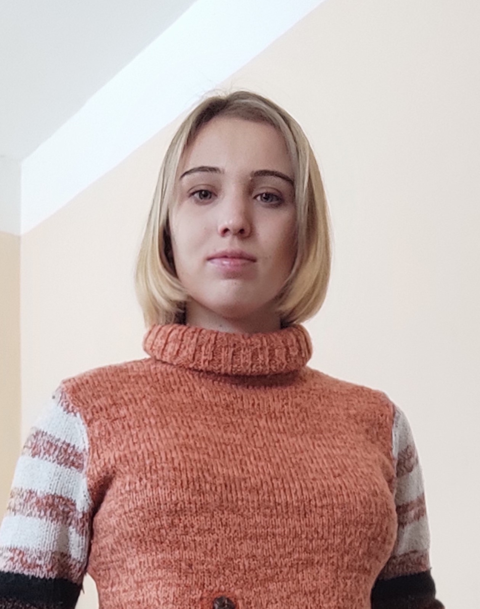

|
Darya Sukhorebska
Welcome to my personal webpage!
I'm a Postdoctoral Researcher at
Karlsruhe Institute of Technology (KIT) in Research Group
Geometry. mentored by Prof. Dr. Alexander Lytchak.
I'm also a Junior Research Fellow at B.Verkin ILTPE
of the NASU , Kharkiv,
Ukraine.
Previously, I was a Ph.D. student under the supervision of
Prof. Dr.
Alexander Borisenko in B.Verkin ILTPE
of the NASU, Kharkiv.
During my PhD studies, I spent two years on a research visit
to
Differential geometry research group,
mentored by Prof. Dr. Burkhard Wilking at the University of Münster.
Research Interests:
My research focuses on the geometric properties of manifolds admitting isometric group actions. My thesis and subsequent projects explored the existence and number of closed geodesics on polyhedral surfaces embedded in three-dimensional spaces of constant curvature. I have also investigated the extrinsic properties of submanifolds with certain cohomogeneity one actions. Currently, I am particularly interested in the topology of positively curved manifolds with symmetry.
|
|
 |
| 
|
Department of Mathematics
Karlsruhe Institute of Technology
D-76128 Karlsruhe
Germany
darya(dot)sukhorebska(at)kit(dot)edu
|
Matematical Division
B.Verkin ILTPE of the NASU
Nauka avenue 47
61103
Kharkiv
Ukraine
suhdaria0109(at)gmail(dot)com
|
| |
|